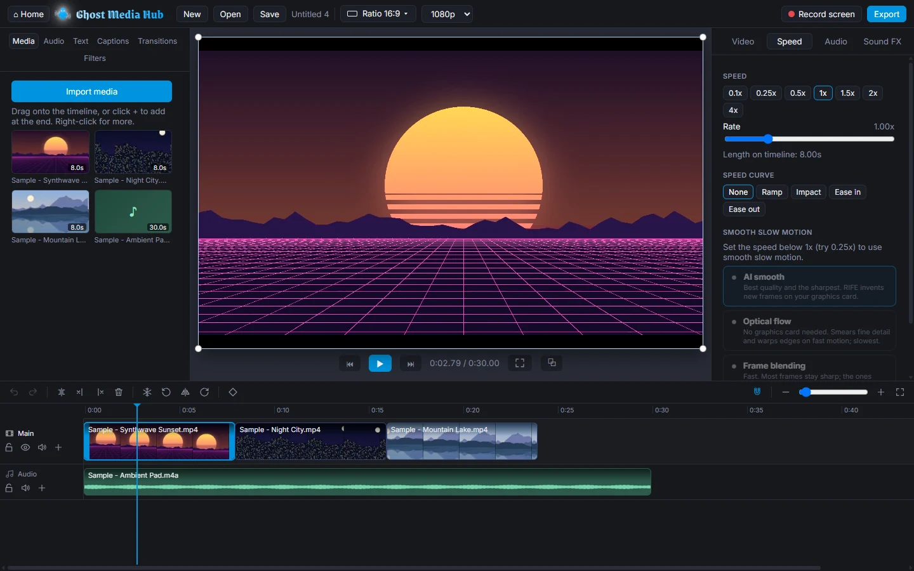
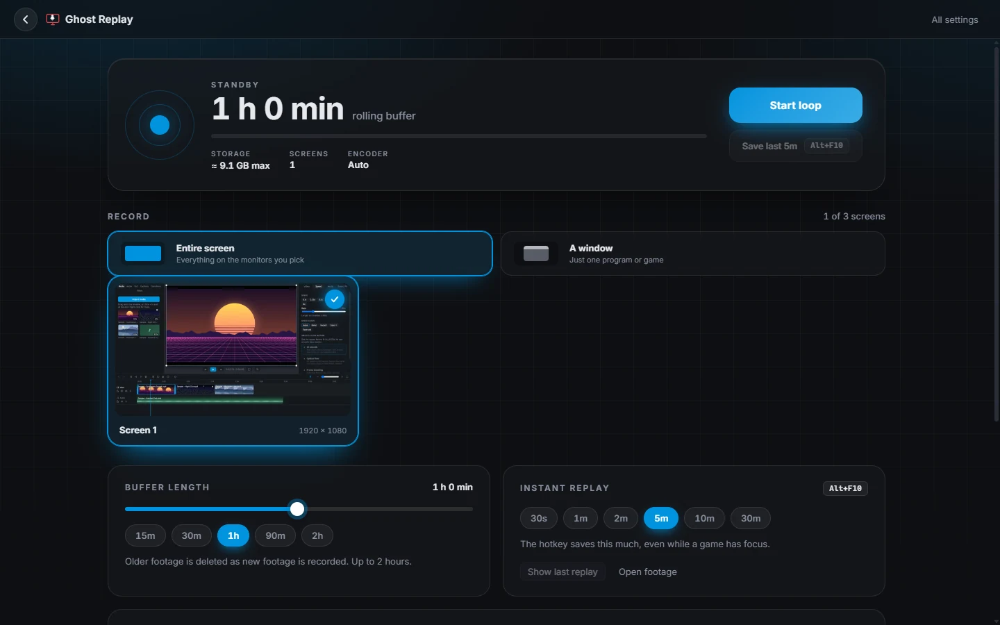
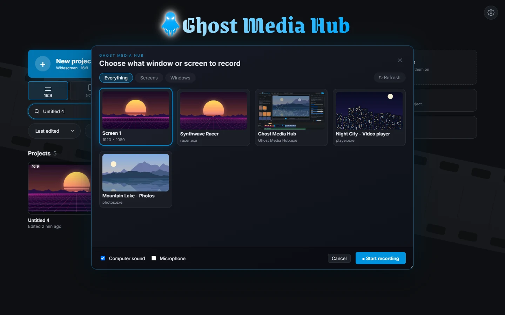
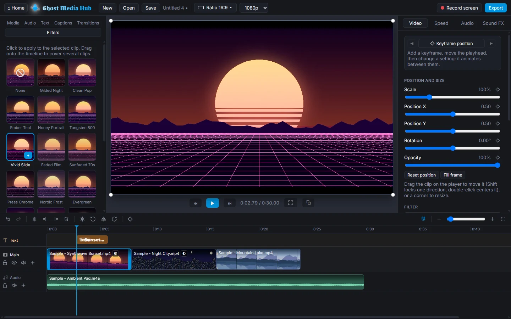
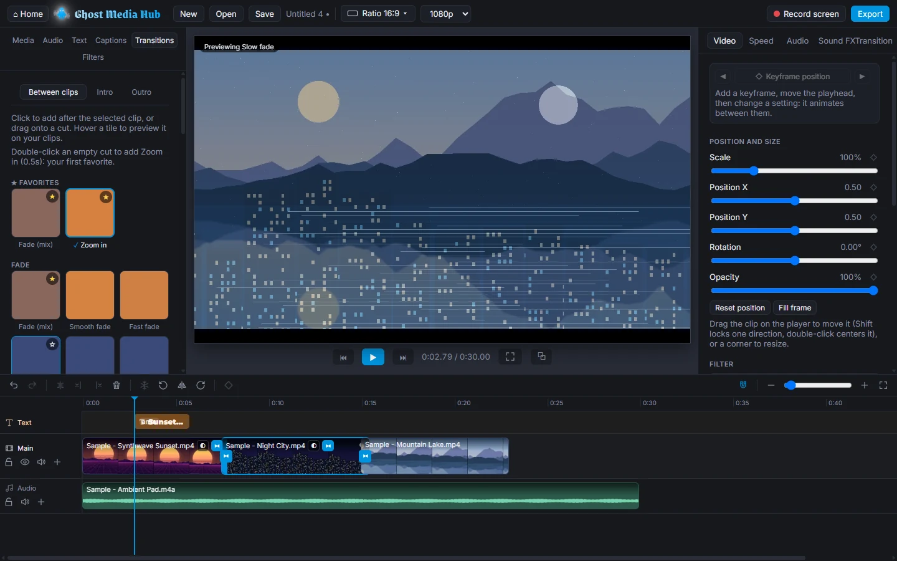
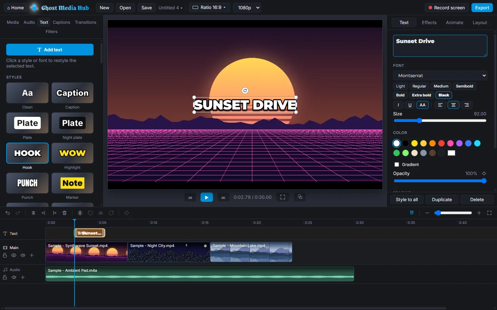

Ghost Replay
Always keeps the last minutes of your screens. Something great just happened? Press Alt+F10 and the last 30 seconds to 30 minutes are saved, even mid-game.
A free video editor for Windows that runs entirely on your PC: cut, color, add text, music, transitions and captions, record your screen, then export. No cloud, no accounts.

Always keeps the last minutes of your screens. Something great just happened? Press Alt+F10 and the last 30 seconds to 30 minutes are saved, even mid-game.

Capture a whole screen or one window, with your PC's sound and your mic. The recording opens as a new project, ready to cut.

One-click film looks and filters, plus full color controls, previewed live on your clip.

Dozens of transitions. Hover one to preview it on your own clips, then drag it between them.

Styled titles, and automatic captions made on your PC that highlight each word as it's spoken.
